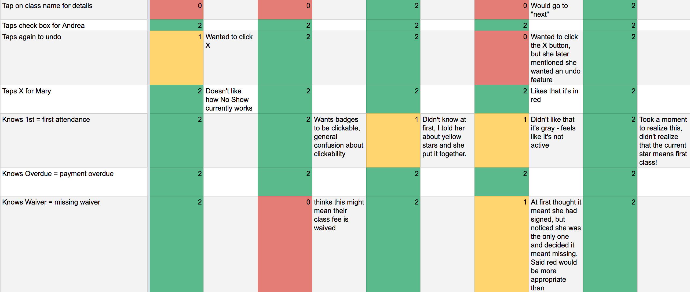
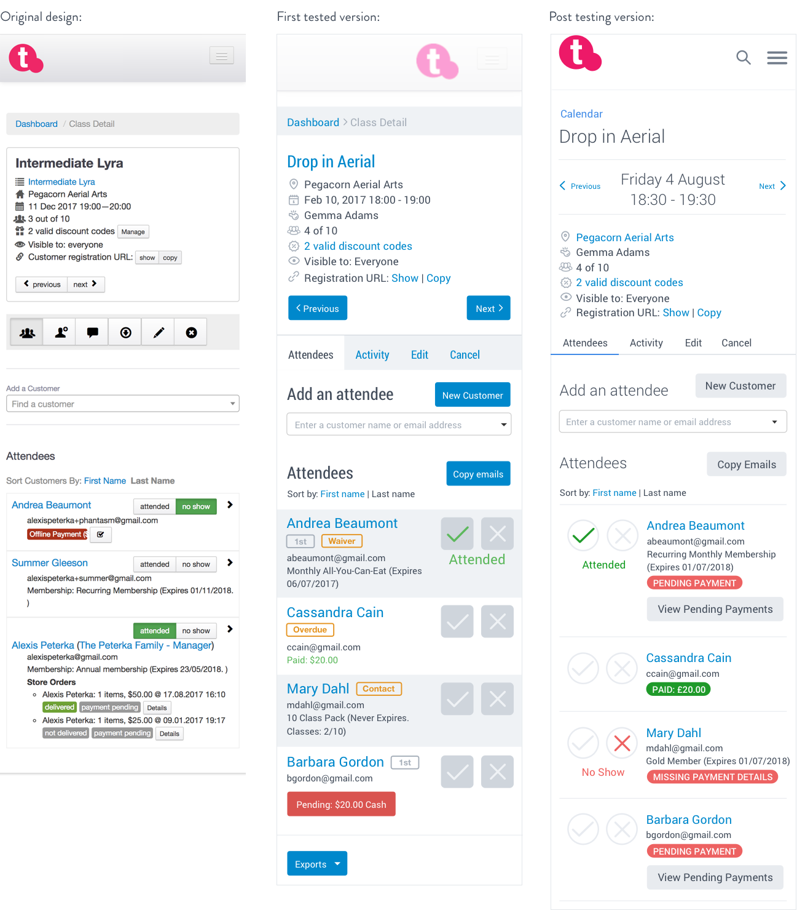

Teamup Class Detail Pages, 2016
Skills
- Heuristic evaluation
- Contextual research
- Usability testing
- UX design
- UI design
Tools
- Google Analytics
- Quicktime (for screen recording)
- Sketch
- InVision app for iOS
- Google Sheets
Artifacts
- Mockups
- Prototypes
- Screen recordings
- Usability testing results
Problem
One of the most commonly used interfaces within the teamup provider platform is the class detail page - where instructors confirm the details of the classes they teach, find out who’s registered, and mark customers as attended or as “no shows”. I wasn’t sure how people were using this page, but there were numerous feature requests, so I decided to take this on as my first user research problem.
In order to define the problems to be solved, I looked at which related feature requests had the most +1s from customers, examined Google Analytics data for these pages, and performed a heuristic evaluation in a typical setting using my own sandbox account. I learned from analytics data that this page was commonly accessed on mobile devices, so I optimized my research for that. I also learned from discussions with and observations of fitness instructors that the tasks they were using our software to perform were undertaken under tight time frames and with many distractions - usually in a brief interval between fitness classes, with clients coming and going and asking questions. We needed to simplify the interface while still providing the powerful tools our customers need.
Solution
First, I defined these problems, and wrote assumptions and hypotheses that I could employ usability testing to explore. Then, I built mobile mockups in Sketch that attempted to validate these assumptions and simplify some of the more common use cases for our customers, like adding a new client to a class, and added a few of the more frequent feature requests, like an easy way to “un-mark” an attendee as a no show. I used InVision to create a usable prototype that allowed users to perform some daily tasks based on a script I wrote for usability testing. Remote testing was conducted via screensharing tools and recorded using Quicktime, while in-person testing utilized my personal iPhone with the InVision app installed and recording the scores for each task by hand. I tested with five remote customers and three in-person participants who are characteristic of our customers although use a competitor’s tools.

Result
After parsing the results of testing, I shared what I learned, including the hypotheses and assumptions that shaped the test. From there, I iterated with the team on design and copy changes we could make to take what I learned and use it to improve the proposed changes. While the redesign hasn’t been implemented yet, it’s been helpful for the team to be able to articulate how we will solve these problems for our customers.
